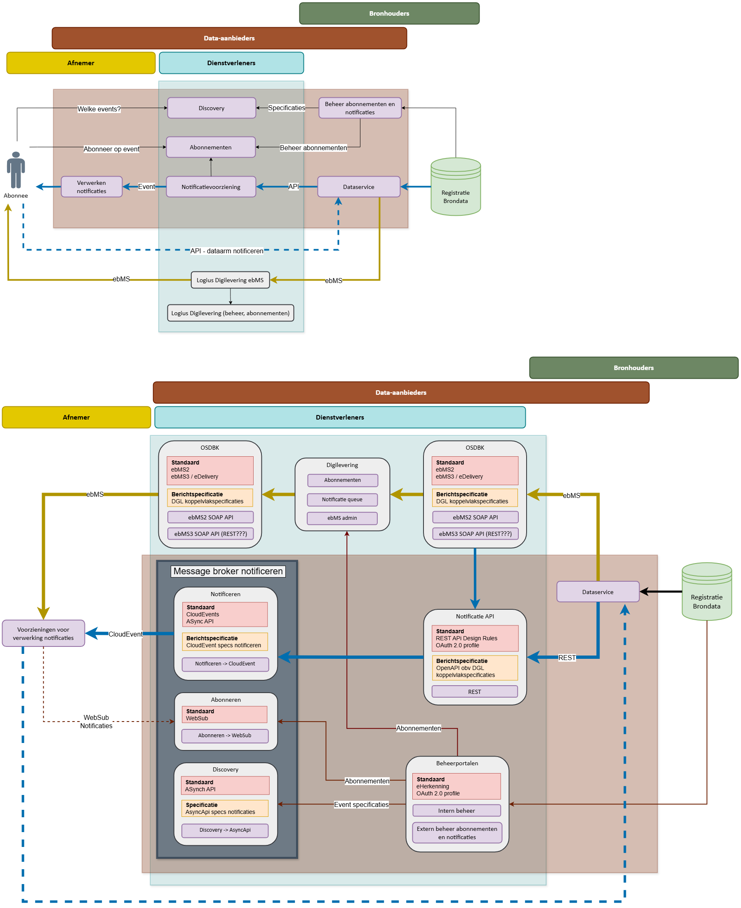

Dit is een werkversie die op elk moment kan worden gewijzigd, verwijderd of vervangen door andere documenten. Het is geen door het TO goedgekeurde consultatieversie.
Conformiteit
Naast onderdelen die als niet normatief gemarkeerd zijn, zijn ook alle diagrammen, voorbeelden, en noten in dit document niet normatief. Verder is alles in dit document normatief.
Samenvatting
Dit is een notitie naar aanleiding van een onderzoek over mogelijkheden voor abonneren in een notificatielanschap, geschreven voor BZK/FDS.
Beknopte samenvatting wordt nog uitgewerkd en komt hier te staan.
1. Wat is het Federatief Datastelsel?
Het Federatief Datastelsel (FDS) is een architectuurprincipe voor het ontsluiten van data bij de bron tussen verschillende overheidsorganisaties, zonder dat centrale opslag nodig is. Data blijven waar ze horen (bij de bron), en worden via gestandaardiseerde interfaces toegankelijk gemaakt.
1.1 Wat betekent "notificeren" binnen het FDS?
Notificeren betekent dat een overheidspartij (bijv. een gemeente, het CBS of de Belastingdienst) op de hoogte wordt gebracht van relevante wijzigingen in datasets van andere partijen, zonder dat die partij actief hoeft te poll-en (periodiek opvragen).
1.2 Waarom zou je abonneren?
Ongeacht of we het hebben over het huidige landschap met centrale voorzieningen of ons proberen in te beelden hoe de toekomstige gedistribueerde omgeving van FDS er uit moet komen te zien, zal je hoe dan ook afspraken moeten maken om notificeren mogelijk te maken.
Een daarvan is een abonneringsfunctie. De kern: "Een partij (burger, bedrijf of overheidsorganisatie) wordt automatisch op de hoogte gesteld van relevante wijzigingen of gebeurtenissen."
In alle domeinen waarin tijdige en gerichte informatie cruciaal is, vervult zo’n mechanisme een noodzakelijke rol.
Zonder een abonneringsfunctie moet een partij telkens zelf controleren of er iets is veranderd — inefficiënt en belastend. Hier zijn de technische redenen waarom een subscription mechanisme nodig is:
1.2.1 1. Event-driven architectuur (EDA)
Het FDS leunt op principes van een event-driven architectuur: in plaats van pull (ophalen), is het wenselijk om push (versturen bij verandering) methodiek te gebruiken.
Een abonneringsfunctie maakt het mogelijk om asynchroon op events te reageren: zodra er een wijziging optreedt bij een databron, worden abonnees automatisch geïnformeerd.
1.2.2 2. Schaalbaarheid en efficiëntie
Bij duizenden dataconsumenten is het niet schaalbaar als elke consument continu de data opvraagt.
Abonneren op notificaties reduceert netwerkverkeer en belasting op (vaak geraadpleegde) bronregistraties.
1.2.3 3. Ontkoppeling van systemen
Met een abonneringsfunctie kunnen producer en consumer onafhankelijk opereren. Dit vermindert de nood voor allerlei koppelingen tussen de verschillende systemen, zeker als er ook een eenduidige berichtenvormaat/standaard wordt gehanteerd.
De dataleverancier hoeft niet te weten wie precies de data gebruikt, alleen dat iemand zich heeft geabonneerd.
1.2.4 4. Betrouwbare levering via message brokers
Via technologieën als webhooks, Message Queues (bijv. Kafka, AMQP) of Pub/Sub kan je notificaties betrouwbaar afleveren.
De abonneringsfunctie registreert endpoints, bewaakt levering en ondersteunt retries bij storingen.
1.2.5 5. Behoefte aan selectieve notificaties
Afhankelijk van de gekozen technologie, zouden abonnees kunnen aangeven op welke events of data-attributen ze willen worden geattendeerd.
Denk aan: “Stuur mij een notificatie als het woonadres van een persoon verandert binnen gemeente X.”
2. Use-cases
Hieronder volgen een aantal use-cases waaruit blijkt dat een abonneringsfunctie wenselijk is.
Bijvoorbeeld tussen gemeenten, uitvoeringsorganisaties en ketenpartners.
Ketensamenwerking: Wmo-meldingen, jeugdzorg, schulddienstverlening — betrokken organisaties moeten snel geïnformeerd worden over elkaars acties.
Risico-gestuurd toezicht: Inspectiediensten willen notificaties bij risicosignalen (zoals bepaalde KvK-inschrijvingen, of veranderingen in BRP-gegevens).
Waarom abonnement? Om proactief ketenpartners te informeren, zonder vertraging of periodieke raadpleging van databronnen.
2.3 3. Bedrijfsleven en maatschappelijke partners
Bijvoorbeeld toegang tot overheidsdata voor bedrijven of NGO’s.
Publicatie van regelgeving: MKB abonneert zich op wijzigingen in wet- en regelgeving in hun sector (via KOOP of wetten.overheid.nl).
Omgevingsdata: Waterschappen, landbouwbedrijven, en bouwbedrijven willen meldingen bij weersveranderingen of vergunningwijzigingen.
Waarom abonnement? Bedrijven willen real-time inzicht, niet zoeken in datahubs of zelf scraping toepassen.
3. Technische en functionele voor- en nadelen
Kenmerk
Voordelen
Nadelen / aandachtspunten
Push-model
Directe notificaties bij verandering; geen onnodige polling nodig
Vereist bereikbare endpoints bij de ontvanger (webhooks, queues), extra beheercomplexiteit
Asynchroon
Ontkoppeling van systemen in tijd (Niet wachten op polling-cycli of batchjobs)
Moeilijker te debuggen; kan leiden tot verzonden maar niet verwerkte notificaties
Schaalbaar
Eén wijziging → veel ontvangers kunnen tegelijk geïnformeerd worden
Fan-out van events vereist robuuste infrastructuur (event-brokers, retry-mechanismen)
Filterbaar
Alleen relevante notificaties voor specifieke abonnees, minder belasting
Complexiteit in beheer van filterregels, abonnementsvoorwaarden en selecties
Gebeurtenisgericht
Past in moderne event-driven architecturen (EDA), geschikt voor microservices
Niet elk bronsysteem is ingericht op het genereren en publiceren van events
Verhoogt afhankelijkheid van notificatiebetrouwbaarheid en leverzekerheid
Decoupling
Producer en consumer hoeven niets van elkaars implementatie te weten
Risico op verlies van context of volgorde zonder extra transactionele garanties
Automatisering
Mogelijkheid tot automatische opvolging in processen
Kan leiden tot ongewenste automatische acties bij foute of onduidelijke notificaties
Conclusie is dat een abonneringsfunctie niet altijd verplicht wordt geacht, maar vaak wel:
Functioneel noodzakelijk is, als tijdigheid en relevantie van informatie doorslaggevend zijn.
Technisch essentieel om schaalbaar en efficiënt notificaties af te handelen in moderne, gedistribueerde overheidsarchitecturen.
4. Technologieën
In het kader van notificeren in een federatief datastelsel, zouden de volgende aspecten sterk naar voren moeten komen wat Logius betreft:
Interoperabiliteit over diverse systemen
Sterke focus op security and governance (authenticatie, authorisatie, audit mogelijkheden)
Schaalbaarheid, robuustheid betrouwbaarheid over heel overheids/rijks-domein
Voorkeur voor standaardisatie en leveranciersonafhankelijkheid
Mogelijkheid tot fine-grained access control en data minimalisering
Wij als Logius, hebben onderzoek gedaan naar de meest actuele technologieën, met oog voor de bovenstaande criteria. Deze hebben wij verzameld in een lijst hieronder:
4.1 Overzicht van belangrijke technologieën die relevant zijn voor de FDS use-case
Technologie / Standaard
Toepassingsgeschiktheid
AMQP (OASIS-standaard)
Enterprise-grade, breed ondersteund, met sterke beveiliging (SASL, TLS). Goede ondersteuning voor gefedereerde brokers. Bewezen effectief in complexe omgevingen met meerdere organisaties.
CNCF CloudEvents + Subscription API
Gestandaardiseerde eventstructuur + abonnementsbeheer, bevordert interoperabiliteit en leveranciersonafhankelijke, cloud-native eventafhandeling. Uitbreidbaar met beveiliging en filtering. Opkomende interesse bij overheid.
WS-Notification / WS-Eventing
Volwassen, XML-gebaseerde SOAP-standaarden met uitgebreid abonnementsbeheer en duurzame abonnementen. Goed inzetbaar in bestaande webservices-ecosystemen bij de overheid. Implementatie kan onnodig zwaar zijn.
WebSub (W3C Recommendation)
Web-gebaseerd publish/subscribe-protocol op basis van HTTP en webhooks. Eenvoudig te implementeren, geschikt voor federatieve omgevingen met lichte notificatiebehoefte. Beperkt in geavanceerd abonnementsbeheer, filtering en security. Laatste update was begin 2018 - project Notificatie services heeft hier ook eerder naar gekeken en besloten om een andere standaard te zoeken.
Kafka met Confluent Security & Federation
Hoge doorvoersnelheid en schaalbare eventstreaming met ondersteuning voor fijnmazige toegangscontrole (ACL), encryptie, multi-tenant clusters. Sterk ecosysteem, maar vereist meer operationele expertise. Geschikt voor grootschalige datadeling.
AsyncAPI (specificatie, geen transportlaag)
Handig voor het ontwerpen en documenteren van event-driven API’s en abonnementen. Bevordert standaardisatie tussen heterogene systemen. Te combineren met andere protocollen. Zie ook ontwikkelingen met Open API Spec + ADR.
NATS (JetStream)
Lichtgewicht, cloud-native messaging met duurzame abonnementen en ondersteuning voor multitenancy. Goed passend in moderne, microservices-gebaseerde overheidsarchitecturen. Nog in ontwikkeling voor grootschalige federaties.
DigiKoppeling REST API-profiel
Nederlandse overheidsstandaard voor REST-koppelingen. Geschikt voor betrouwbare, gestandaardiseerde communicatie tussen overheidsdiensten. Minder geschikt voor hoge frequentie of real-time push zonder uitbreiding met event-infrastructuur.
MQTT (OASIS-standaard)
Lichtgewicht en ontworpen voor IoT/sensornetwerken; minder geschikt voor complexe datagovernance of federatieve samenwerking op overheidsniveau.
GraphQL Subscriptions
Zeer geschikt voor real-time data in frontend-applicaties, maar niet ontworpen voor federatieve gegevensdeling over organisatiegrenzen heen op grote schaal.
5. Aanbevelingen:
5.1 1) AMQP + CloudEvents + Subscription API 0.0.X
AMQP en CNCF CloudEvents met Subscription API vormen samen op dit moment de meest zekere en toekomstbestendige combinatie voor federatieve gegevensdeling binnen de overheid:
AMQP (Advanced Message Queuing Protocol) biedt een volwassen, veilig en interoperabel fundament voor berichtenverkeer. Veel organisaties gebruiken AMQP al binnen enterprise-integraties. Het ondersteunt federatie van message brokers over administratieve domeinen heen, met robuuste beveiligingsmechanismen zoals mutual TLS, SASL-authenticatie en fijnmazige toegangscontrole. Dit maakt het geschikt voor omgevingen waar betrouwbaarheid, auditability en governance centraal staan.
CloudEvents is een leveranciersneutraal en gestandaardiseerd eventformaat, ontworpen om interoperabiliteit tussen heterogene systemen te vereenvoudigen. In combinatie met de Subscription API-specificatie biedt het een uniforme manier om abonnementen uit te drukken en te beheren. Hierdoor kunnen overheidsorganisaties onderling heldere afspraken maken over hoe gebeurtenissen worden gedefinieerd, geabonneerd en geconsumeerd, ongeacht de gebruikte technologie of leverancier.
Hoewel AMQP krachtig is, vereist het wel specifieke operationele kennis voor het opzetten van brokerfederaties. CloudEvents biedt daarentegen juist eenvoud en flexibiliteit aan de randen van het stelsel, bijvoorbeeld voor toepassingen in microservices of cloud-native architecturen. Samen dekken ze zowel de robuuste back-endbehoefte als de moderne front-end use-cases binnen een federatieve overheid.
Deze combinatie ondersteunt zowel de technische als organisatorische doelen van het Federatief Datastelsel, zoals:
Losse koppeling tussen datasystemen;
Event-gedreven samenwerking;
Beheersbaarheid en schaalbaarheid in een multi-domeinomgeving.
Security & Identity: Integration with federated identity and authorization frameworks (e.g., OAuth 2.0 / OIDC for authentication, fine-grained RBAC/ABAC policies) is crucial to govern who can subscribe and consume what data.
Auditability & Compliance: The protocol must support traceability of subscriptions and message consumption to comply with government regulations.
Interoperability: Favor open standards and protocols with broad tooling support and community adoption.
Operational Complexity: Consider operational burden; cloud-native solutions (e.g., Kubernetes-based deployments using CNCF projects) may help reduce overhead.
Bas kooij heeft een uigebreid onderzoek uitgevoerd naar toepasbaarheid van Solace binnen Digilevering. Als er vooralsnog kan worden gewerkt met (centrale) dienstverleners dan zou je het volgende kunnen aanhouden:

Maak gebruik van een bestaand commercieel event-streamingplatform zoals Solace PubSub+ als centrale broker voor het realiseren van een notificatiefunctie binnen het Federatief Datastelsel (FDS). Deze oplossing sluit aan bij scenario 2a van de PSA ("centrale broker voor notificatie op maat van gegevensuitwisseling") en maakt het mogelijk om direct te werken met de CloudEvents-standaard (inclusief NL GOV-profiel).
5.2.1 Toelichting
Solace biedt een volwassen, schaalbare en feature-rijke oplossing voor event-notificaties en integreert goed met de bestaande technologieën van Logius. In tegenstelling tot maatwerk of open source oplossingen, is deze benadering gericht op snelle implementatie, betrouwbaarheid en ondersteuning op enterprise-niveau.
De oplossing ondersteunt CloudEvents out-of-the-box en biedt functies als:
Throttling, filtering, retry-mechanismen, metrics
Ondersteuning voor AMQP, MQTT, REST, JMS, WebSockets
Abonnementenbeheer via API/CLI
Hybrid deployments: public cloud, private cloud of on-premise
5.2.2 Voordelen
Volledige functionaliteit direct beschikbaar, inclusief monitoring, retry, foutafhandeling, filtering, en throttling
Snellere doorlooptijd tot productie dan zelfbouw, door gebruik van bestaande tools en SDK’s
Schaalbare performance tot honderden berichten per seconde, met uitbreidmogelijkheid
CloudEvents ondersteuning volgens NL GOV-profiel
Goede integratie met bestaande Logius-systemen (Java, Kubernetes, REST, etc.)
Mogelijk gebruik in hybride scenario’s: eigen datacenters in combinatie met Solace Cloud
Commerciële support en training beschikbaar
5.2.3 Aandachtspunten / nadelen
Licentie- en supportkosten: geschat tussen de €50.000 - €100.000 per jaar bij volledige OTAP-uitrol
Afhankelijkheid van leverancier (closed source) en mogelijk maatwerk op onderdelen
Geen directe abonnementsgoedkeuring zoals Digilevering dat nu kent – maatwerk vereist
Beheerlast blijft bestaan, met extra training voor personeel op het platform
Sommige beheertools alleen beschikbaar via Solace Cloud, ook bij private cloud gebruik
Solace scoort hoog op integratie, performance en functionaliteit. De oplossing is vooral aantrekkelijk bij opschaling of uitbreiding naar meerdere bron- en afnemersystemen, en bij organisaties die op korte termijn een robuuste notificatievoorziening nodig hebben.
Bij beperkte schaal of als volledige controle over de codebase essentieel is, kan zelfbouw of een open source-oplossing aantrekkelijker zijn (zie oplossingsrichting 1).